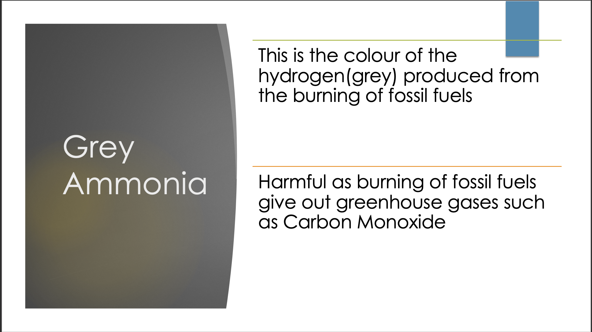

- This is the colour of the hydrogen(grey) produced from the burning of fossil fuels
- Harmful as burning of fossil fuels give out greenhouse gases such as Carbon Monoxide
Burning of Fossil Fuels to produce Grey Hydrogen
Haber-Bosch process to react Grey Hydrogen with Atmospheric Nitrogen to obtain Grey ammonia
Burning of fossil fuels to produce Grey Hydrogen produces greenhouse gases that attributes to Global Warming
